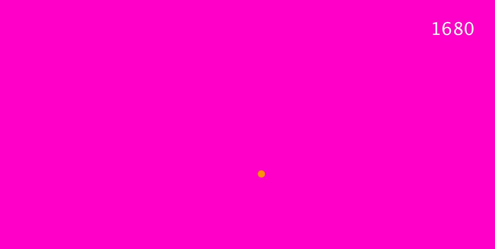
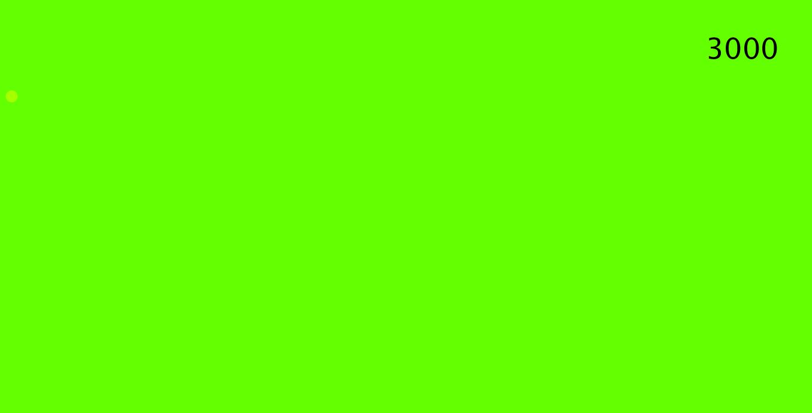
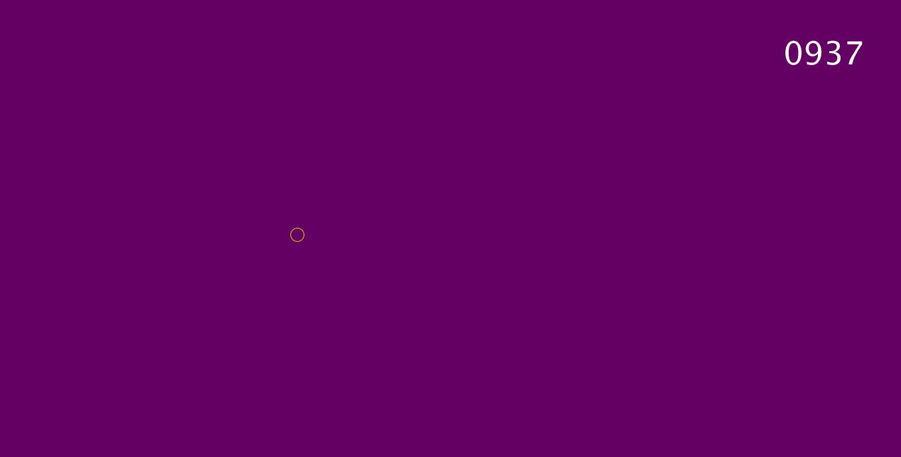

Final Project - Interface in the Form of a GAME (of skill)
Wesley Bower
Art 101
Final Project Proposal
For my final interface project, I wanted to make a game in which the user is not told specifically what to do in its levels. Part of the fun of those games to me is figuring out what to do fast. I was planning on having a timer in the top right-hand corner of the screen that starts at maybe 2000 milliseconds and counts down to zero. If the player doesn’t complete the task for the level in the given time, they will lose and have to start from level 1 again! The task itself will be simple in concept: to just click once inside a small circle on the screen that appears at a random location. As the levels go on though, I want them to get harder by making the circle more and more similar to the shade of the background and therefor harder to find on the screen fast. I wanted to make three levels, the first one with a decent sized circle of a contrasting color to the background. This would be easy to click on for someone with good reaction time. If the player couldn’t click in the circle in time, they wouldn’t have invested time into the game yet so it wouldn’t feel too bad starting over again on the same level. Then when the player successfully clicks in the circle, the next level would immediately start with maybe like a 1-second pop up that says level 2. The player would then be conditioned by the game to know what to expect but soon realize that level 2 is not the exact same as level 1. Then for level 3, I was thinking the best curveball to throw at the player would be to have the circle almost identical to the background, maybe only a couple RGB values away from each other, but as the player moves the mouse around the screen, a sound would get louder as the mouse was closer to this almost invisible circle. The user would be playing hot or cold and would be forced to only rely on sound at first to get a good approximation of where the circle would be before they could start using their eyes and looking for it. What I want my levels to do is follow the same trend of objective so that the user knows what to do, but continually throw new curveballs at them forcing them to think even faster. I like games that teach through gameplay and not through explanation so I know I don’t want a screen that tells you exactly what to do. I think it would be really funny to also have a help button that can be clicked from a menu, but it would just say something sarcastic or convoluted like, “If you feel stuck, just try doing it better!” Obviously I can’t make all the levels for the game, but I want to convey a sense of the user learning as the game progresses, and make them feel like it is possible if they just focus. I want to make it hard but just easy enough that after a couple tries of missing the timer and having to start over, the user will get it. To make this game I was going to use p5.sound and p5.scenemanager. The scene manager will help me easily keep track of different states and pop up pages, and I know I will need sound for my third level.
Different states:
Start screen
Fake help menu
First level pop up
Actual first level of the game
Second level pop up
Actual second level of the game
Third level pop up
Actual third level of the game
The “game over” screen that triggers when you take too long on any of the levels
The screen that says you won when you win!
Game references:
For playstyle and in-game learning: Castlevania
For game design and not telling you what youre supposed to do: Dumb Ways to Die



Artist Statement
My simple game is an example of an interface because a user can not only interact with my program, but they are immersed in the world of the simulation. My program simulates a test of the user's ability. In this case good reaction time and good eyesight come in handy and can even be improved through interacting with this program. When making my interface, I had fun adding in text blurbs and small comments in my own language. When the user interacts and goes through the different levels, the comments come to them in a simple and short way. I wanted to make my comments feel like it was a person talking to the user and giving them condescending and convoluted hints rather than just exact directions to follow. In this sense I could also say that my game demonstrates the different language and role-playing abilities that interfaces have. Because I made funny blurbs of text and a help menu that makes the user feel like they shouldn't need any help at all, the player is inticed into continuing to play until they've beaten it. It has such a simple premise yet is quick to fool someone who thinks that it will be too easy, and I think that makes a fun game. I think by setting up this simulation to appear so easy players are surprised at how the game stumps you right away, they are drawn back. I also incorporated flat design into my interface. My buttons don't have drop shadows and the targets dont either. To reinforce the simple design I drew all of the animations by hand in Photoshop. My program is a demonstration of an interface because it doesn't just allow the user to interact but invites them to through goofy language and juxtaposing simple design and game mechanics with difficult levels.
Link to scenes.js file
Link to sketch.js file